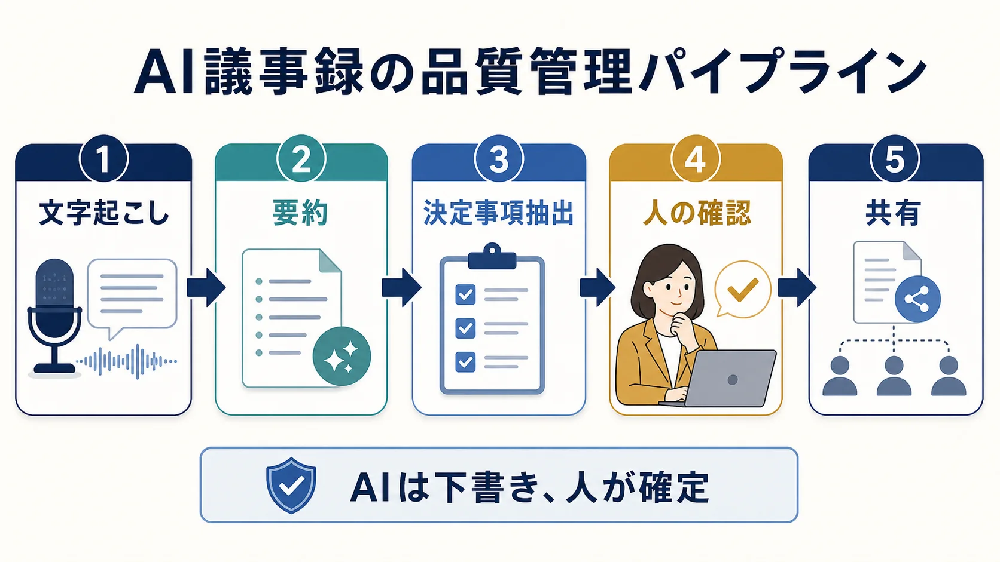

AI MEETING MINUTES / PRACTICAL GUIDE
議事録をAIで効率化する方法｜自動作成の確認ポイント
議事録AIは、会議の文字起こしや要約を速くする道具です。ただし、AIの出力をそのまま正式記録にするのではなく、人が決定事項とToDoを確認する工程まで設計して初めて、業務で安全に使えます。
議事録AIで任せられる作業はどこまで？
2025年6月更新のIPA「AIの利活用、AIによるDXの推進」では、具体的なAI導入パターンの一つとして「会議録作成・要約作成」が挙げられています。AI議事録は、録音や入力から情報を整理する用途には向いていますが、合意の事実を最終判断する担当者の代わりにはなりません。
任せやすいのは、長い発言を短くまとめること、話題を分類すること、候補となる決定事項やToDoを抜き出すことです。逆に、否定表現、固有名詞、金額、期限、誰が発言したかは、誤りが業務に直結しやすいため確認対象にします。
議事録AIを選ぶときは、要約の賢さだけを比べないでください。出力を「確認しやすい形」で返せるか、担当者と期限を分けて表示できるかが、現場での定着を左右します。
議事録AIの品質を保つ5段階とは？
AI議事録は、一度の生成で完成させるより、処理を5段階に分ける方が確認漏れを見つけやすくなります。2026年3月31日時点で経済産業省の検討会ページにはAI事業者ガイドライン第1.2版が掲載されており、AIを使う側もリスクを認識して対策を行う考え方が示されています。

| 工程 | AIに任せること | 人が確認すること |
|---|---|---|
| 1. 文字起こし | 音声をテキストに変換 | 話者名、専門用語、数字 |
| 2. 要約 | 話題ごとの短い整理 | 重要な条件や反対意見の抜け |
| 3. 決定事項抽出 | 結論らしい文を候補化 | 本当に合意した内容か |
| 4. 人の確認 | 確認用の見出しや一覧を作る | 担当者、期限、保留事項 |
| 5. 共有 | 指定フォーマットへ整形 | 権限、宛先、保存期間 |
AIの議事録で人が確認すべき項目は？
議事録の品質は、文章が自然かどうかではなく、次の行動が間違いなく伝わるかで判断します。特に「決まったこと」と「提案されたこと」は、AIが似た文体でまとめると区別しにくくなります。会議終了後に、確認者が4つの項目を順に見ます。
- 決定事項：合意した内容だけが入っているか
- 保留事項：追加確認が必要な論点が残っているか
- 担当者：誰のタスクかが一意になっているか
- 期限：日付や次の確認タイミングが書かれているか
「確認します」「検討します」のような表現は、そのままではタスクになりません。担当者と期限が決まっていない場合は、未確定として議事録に残します。無理に埋めるより、保留を明示した方が後からの認識違いを減らせます。
議事録AIの情報管理で何を確認する？
2024年7月31日更新のIPA「テキスト生成AIの導入・運用ガイドライン」は、導入、運用、リスク管理を分けて整理しています。議事録AIでも、入力する情報、保存場所、閲覧権限、削除方法、事故時の連絡先を先に決めると、ツール選定の基準が明確になります。
保存場所はサービスによって異なります。たとえばMicrosoft Teamsの公式説明では、文字起こしを有効にした会議のデータが主催者のExchange OnlineやOneDriveに保存されるケースが説明されています。これは全サービスに当てはまる話ではないため、導入候補の利用規約と管理者設定を確認してください。
社外秘の資料や個人情報を扱う会議は、いきなり本番データで試さないこと。まず匿名化したサンプルで、保存期間、学習利用の有無、共有範囲、削除操作を確認します。判断に迷う項目はAI導入リスク・社内ルール診断で洗い出せます。
議事録AIを無料で試す手順は？
最初から全会議を自動化する必要はありません。2025年6月更新のIPAページが示すように、会議録作成はAI活用の一例です。小さな会議を一つ選び、作成時間と確認時間を分けて測ると、自社に必要な機能と不要な機能が見えてきます。
- 機密性の低い社内会議を一つ選ぶ
- 残したい項目をテンプレートで固定する
- AIの下書きと人の確認にかかった時間を記録する
- 誤変換の種類を3回分だけメモする
- 改善後のルールと共有先を決める
まずは議事録の型を無料で試す
会議名、決定事項、保留事項、ToDoを入力すると、Markdown形式の議事録をブラウザ内で作成できます。AIに任せる前に、社内で残したい項目をそろえる用途に向いています。
議事録テンプレートを使うよくある質問
議事録AIは完全自動で使えますか？
完全自動の正式記録にするのは避けます。AIに文字起こしや要約の下書きを任せ、固有名詞、数字、決定事項、担当者、期限を人が確認してから共有します。
議事録をAIに入力してはいけない情報は？
個人情報、顧客の機密情報、契約前の情報などは、利用サービスの保存・学習条件を確認するまで入力しない運用が安全です。社内の情報分類と承認者を先に決めます。
無料で議事録AIを試す方法は？
まずは会議名、決定事項、保留事項、ToDoを入力するテンプレートで整理の型を確認し、その後に議事録AI体験デモを試すと、必要な機能を切り分けられます。
まとめ
議事録AIは、会議を自動で判断する仕組みではありません。文字起こしや要約の下書きを速く作り、決定事項とToDoを人が確認するための補助役です。まずは低リスクの会議で工程を分け、誤りの傾向と確認時間を測ってください。
参考にした公式情報
- IPA「AIの利活用、AIによるDXの推進」（2025年6月16日更新、2026年7月12日閲覧）
- 経済産業省「AI事業者ガイドライン検討会」（2026年3月31日更新、2026年7月12日閲覧）
- IPA「テキスト生成AIの導入・運用ガイドライン」（2024年7月31日更新、2026年7月12日閲覧）
- Microsoft Learn「Data, privacy, and security for intelligent recap in Teams Premium」（2026年7月12日閲覧）